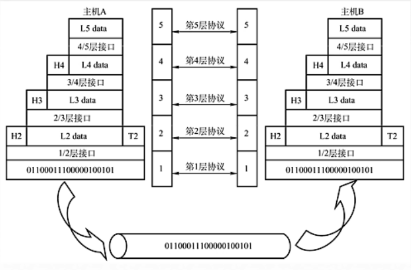

计算机网络（一）
计算机网络的概念
计算机网络是将一个分散的、具有独立功能的计算机系统，通过通信设备与线路连接起来，由功能完善的软件实现资源共享和信息传递的系统。说的直白点呢，就是我们可以理解为我们使用的电子设备，比如手机啊，电脑啊这类的东西，它们通过通信设备比如路由器，交换机，通过线路，信号等方式连接到了一起，这样我们就有了最基本的连接，也是实现网络的基础，之后我们可以通过一些软件，比如QQ，微信就可以和别人传输文件，聊天，也就是实现了资源共享和信息传递。所以我们说计算机网络是互联互通的、无主从关系的计算机集合。当然这句话说的也是有点遮遮掩掩的，所以我来为大家解释一下，互通互联就意思这些电子设备一定是相互连接到一起的，可能通过光纤，卫星信号等等方法，总之是连接到了一起。无主从关系的意思是虽然它们通过一种方式连接到了一起，但是它们并不会控制对方或者被对方控制，完全是一个独立的个体。
计算机网络的功能
计算机网络有四大基本的功能：
- 数据通信：计算机网络可以实现数据的通信，比如我们经常会通过微信给别人传文件。
- 资源共享：资源共享又分为3类，分别是硬件资源共享，软件资源共享，数据资源共享，硬件资源共享可以体现在传真机上，我们并不一定要占有一个传真机才能使用。软件资源共享可以体现在现在的云服务，有些软件并不需要我们下载到本机上就可以使用。数据资源共享，这个就很常见了，比如我们经常在网络上搜索各种文档。
- 分布式处理：分布式处理的意思就是一个任务的工作量很大，那我们就把任务拆解，分给不同的计算机承担，提高工作效率，比如Hadoop平台，可以分布式的存储数据，处理数据。
- 提高可靠性：我们可以假象这样一个情况，我们有一个一直运行的主机，有一天它不堪重负，突然宕机了，如果我们只有这样的一个主机，那可就完了，但是计算机网络可以解决这样的问题，因为它为我们提供了更多的主机，当一个主机宕机之后，还可以有别的主机做它的替代机。
计算机网络的组成
计算机网络的组成可以通过不同的角度来区分：
从组成部分角度来看，计算机网络由硬件、软件、协议组成。硬件很好理解了，我们肯定需要一个设备才能参与到连接之中，软件我们之前也说到了，有了软件才可以进行数据，资源的传输。协议是计算机网络的核心，它是一系列规则和约定的集合，只有遵循协议才可以进行安全的传输。
从工作方式角度来看，计算机网络由边缘部分、核心部分组成。边缘部分是用户直接使用的，可以在这个工作方式下进行信息和文件的传输，通常分为C/S方式和P2P方式，C/S方式就是客户端服务器模式，而P2P方式就是对等方式。核心部分是为边缘部分服务的，说的简单点就是我们的基站，转换机这类的东西。
从功能组成角度来看，计算机网络由通信子网、资源子网组成，通信子网实现了数据通信，资源子网实现了资源共享、数据处理。
计算机网络的分类
计算机网络按照分布范围分类可以分为广域网WAN、城域网WAN、局域网WAN、个人区域网PAN。广域网的范围就和名字一样很广阔，一般是跨国的。城域网一般是一个城市内得网络，局域网可能大家听得比较多，局域网大多相差的距离在1000米内，一般我们在学校使用的校园网就是多个局域网相连的。个人区域网可能不常听到但其实每天我们都可以接触到，比如我们给别的电子设备开热点，我们的智能手表这些都是个人区域网的体现。广域网使用的技术叫做交换技术，而局域网使用的是广播技术，这个我们以后还会在提到。
计算机网络按照使用者分类可以分为公用网、专用网。这个就很好理解，公用网就是我们平常大家都可以用的网络，比如电信，联通这些网络，而专用网是需要一定的权限才可以进入的网络，就比如银行网络，军队网络这些一般人是不能随意进入的。
计算机网络按照交换技术分类可以分为电路交换、报文交换、分组交换，后续我们会详细的介绍这些。
计算机网络按照拓扑结构分类可以分为……等等什么是拓扑结构？网络拓扑是网络形状，或者是网络在物理上的连通性。网络拓扑结构是指用传输媒体互连各种设备的物理布局，即用什么方式把网络中的计算机等设备连接起来。拓扑图给出网络服务器、工作站的网络配置和相互间的连接。也就是说实际上就是我们硬件层面上基站啊交换机啊这些东西都是怎么连接的，所以按照这个结构分可以分为总线型、星型、环型、网状型，我们使用的广域网就是一个网状型的拓扑结构。我们可以看一下这些结构都长什么样子：
计算机网络按照传输技术分可以分为广播式网络、点对点网络。广播式网络的意思是设备共享公共通信信道，就好像是我们平时听广播，当一个设备向信道传输信息后，所有连接在一起的设备都可以接收到信息，接收到信息后会进行一些处理看看是不是传给自己如果是就收下，反之就丢弃。点对点网络，使用分组存储转发和路由选择机制，进行一对一的计算机通信。
标准化工作及相关组织
标准化对计算机网络至关重要！要实现不同厂商的硬件、软件之间相互连通，就必须要遵从统一的标准。
我们将标准分为两类：法定标准、事实标准。法定标准是由权威机构制定的正式的、合法的标准，比如我们接下来会介绍的OSI。事实标准是某些公司的产品在竞争中占据了主流，时间长了，这些产品中的协议和技术就成了标准，就比如现在很常用的TCP/IP协议。
计算机网络的性能指标
计算机网络有八个性能指标来表示计算机网络的性能，接下来我们一个一个的了解一下。
速率
速率即数据率或称数据传输率、比特率都可以。我们知道计算机实际上存储的都是0 1这样的二进制数字，所以我们传输的也是这样的数据，数据传入信道都是1个比特1个比特的进入的，那么速率表示的就是连接在计算机网络上的主机在数字信道上传送数据位数的速率单位有b/s，kb/s，Mb/s，Gb/s，Tb/s。假如现在我们有两台电脑，一个是发送端，一个是接收端。发送端准备了0101010101这样的10b大小的数据要传输给接收端，如果它在1s内完成了传输。那我们就说传输的速率为10b/s。速率的换算都是1000一进位，比如1kb/s就等于1000b/s。 这里要注意区分速率和存储容量，当我们描述速率的时候是符合这样1000进率的，但如果我们描述的是数据的大小，那就不一样了，比如1KB=1024B。这里还有一个小细节可以区分描述的是速率还是存储容量，当我们描述存储容量的时候单位一般是全大写的。
带宽
带宽原本指的是某个信号具有的频带宽度，即最高频率和最低频率之差，单位是赫兹(Hz)。在计算机网络中，带宽用来表示网络的通信线路传送数据的能力，通常是指单位时间内从网络中的某一点到另一点所能通过的“最高数据率”，也可以理解为网络设备每秒向信道上发送的最大数据量，比如我们买了一个100M带宽的交换机，那代表的意思就是交换机每秒最多往信道上传输100M的数据。带宽的单位有b/s，kb/s，Mb/s，Gb/s。
吞吐量
吞吐量表示在单位时间内通过某个网络（或信道、接口）的数据量，单位也是b/s，kb/s，Mb/s等，吞吐量受网络的带宽或网络的额定速率的限制。吞吐量是实际传输速率的总和，如果我们的主机接收两个服务器的数据一个的速率是20Mb/s，一个是10Mb/s，那么吞吐量就是30Mb/s
时延
时延指的是数据（报文、分组、比特流）从网络的一端传输到另一端所需要的时间，也称为延迟，单位是s。时延还可以划分为发送时延（传输时延），传播时延，排队时延，处理时延。发送时延指的是从发送分组第一个比特算起到最后一个比特发送完毕所需要的时间，换句话说就是主机将要发送的数据全部送到链路（信道）上所需要的时间，我们使用数据长度/信道带宽就可以得到发送时延。传播时延指的是信息传输到目的主机所需要的时间，我们可以通过信道长度/电磁波传播速率得到传播时延。排队时延和处理时延发生在信息传输的途中，我们的信息到达路由器的时候，路由器需要处理一下这些数据，那么因为我们的数据不是一次性的传输过来，所以就要一个一个的处理，这个时候就要排队，所以会有一个排队和处理的时延。
一般来讲我们只能通过提高信道的带宽去降低发送时延，很难去改变传播时延，因为那需要对现在的硬件层面有一定的提升才可以做到。
时延带宽积
时延带宽积=传播时延×带宽，我们刚才说传播时延就是数据从发送端传输到接收端所需要的时间，带宽是发送端每秒可以向链路上传输的数据量，那么时延带宽积就可以表示当前链路中有多少数据。所以时延带宽积又被称为以比特为单位的链路长度。
往返时延RTT
当我们在打游戏的时候可能有的时候很卡，像是玩PPT一样，这就说明此时的往返时延RTT太高了，所以我们很卡。往返时延表示从发送方发送数据（当数据的第一个bit被放到链路上的时候）开始，到发送方收到接收方返回确认所用的时间（当接收方收到信息后立马就会发送确认）。RTT可以表示为传播时延×2+末端处理时间。我们可以在终端中使用ping命令来查看RTT：
我们可以看到博主ping百度的往返时延就是18毫秒左右，在最下面也有体现。RTT越大，在收到确认之前，可以发送的数据也越多。这个很好理解我们在接收到确认之前只能不停的发送数据，时间越长，发的自然也越多。
利用率
在计算机网络中我们将利用率分为两种，一种是信道利用率，一种是网络利用率。当两个主机进行信息传输的时候，信道中有百分之几的时间是被利用的，那我们就说信道利用率是多少，但我们想一个问题，如果我们在传输的过程中会有排队的情况出现，如果我们信道利用率很高，那么排队的时间也会很长，那么信道的利用率增大时，该信道引起的时延也会迅速增加，因此信道利用率并不是越高越好。但信道利用率过低又会浪费资源所以需要一个合理的机制来调控。
丢包率
丢包率即分组丢包率，指在一定时间的范围内，传输过程中丢失的分组数量与总分组数量的比率。丢包率具体可以分为接口丢包率、结点丢包率、链路丢包率、路径丢包率、网络丢包率等。分组丢失主要有两种情况：首先是分组在传输过程中出现误码，被结点丢失。其次是分组到了一台队列已满的分组交换机的时候就会被丢弃，在通信量较大的时候就可能造成网络拥塞。
分层结构
在了解分层结构之前，我们先来了解一下计算机进行数据传输之前需要做些什么。第一，发起通信的计算机必须将数据通信的通路进行激活。第二，要告诉网络怎么寻找目的主机。第三，发起通信的计算机要查明目的主机是否开机，并且与网络连接正常。第四，发起通信的计算机要弄清楚对方计算机中文件管理程序是否已经做好了准备工作。第五，要确保差错和意外是可以解决的……
这些问题都是进行数据传输前要解决的，如果我们要将这些问题视为一个整体去处理显然是很难的，所以我们将这个大问题拆分成很多小问题再去解决，这也就是为什么我们要分层。
分层的基本原则
了解了为什么要分层，我们来了解一下分层的几个原则：
- 各层之间相互独立，每层只实现一种相对独立的功能
- 每层之间界面自然清晰，易于理解，相互交流尽可能少
- 结构上可分隔开，每层都采用最合适的技术来实现
- 保持下层对上层的独立，上层单向使用下层提供的服务
- 整个分层结构应该能促进标准化工作
一些分层结构中出现的名词

我们根据上面的图片，来了解一下具体的分层结构，以及分层结构中的一些名词。
第一个是实体，我们可以看到图片中每一层都有数据，这些数据我们就可以叫做实体，第n层的数据我们就叫它n层实体，而另一台主机上与它同层的数据就是它的对等实体。
第二个是协议，协议是为进行网络中的对等实体数据交换而建立的规则、标准或约定成为网络协议，网络协议只建立在对等实体之间，不对等的实体不存在协议。协议有三要素，语法，规定传输数据的格式，语义，规定要完成的功能，同步，规定各种操作的顺序。
第三个是接口，我们可以看到每一层之间都有一层接口，这是上层使用下层服务的入口，也是下层为上层提供服务的入口。
第四个是服务，下层为相邻上层提供的功能调用。
具体的分层结构
现在我们已经了解了基本的分层结构，知道了分层结构中的名词，实际上分层结构有两种参考模型，一种是7层的OSI参考模型，一种是4层的TCP/IP参考模型，我们分别了解这两个模型。
7层OSI参考模型
为了解决计算机网络复杂的大问题，所以产生了按功能划分的分层结构，所以各个公司都根据这种分层结构提出了不同的网络体系结构，比如IBM的SNA，DEC的DNA，美国国防部的TCP/IP等等，但这么多网络体系结构注定是不方便我们通信的，所以ISO在1984年秉承着支持异构网络系统互联互通的原则，提出了开放系统互联（OSI）参考模型。它的理论十分完美，只是在市场上有点……
OSI参考模型分为7层，从上至下分别是应用层、表示层、会话层、传输层、网络层、数据链路层、物理层，这7层每一层都负责一个或多个任务。下三层是通信子网负责数据通信，上面三层是资源子网负责数据处理，传输层是这两个子网之间的接口，用来连接两个子网。
我们在看一下OSI模型通信的一些基本知识，OSI模型通信由源主机、中间系统和目的主机构成。上面四层，也就是应用层到传输层这四层是端到端的，也就是关注的是数据从源主机交付到了目的主机，而不关注每一步是如何传输的，而下三层是点到点的，关注数据在传输过程中下一步要去往哪里。每一层都会对数据进行处理然后传递给下一层。

接来下我们来看一下OSI模型通信的过程。
当我们的主机A发出了一条消息后，应用层会先给它加上一个应用层头部也就是我们说的PCI，这个PCI包括用来检查错误的信息，传输过程中下一个地方的地址，数据的优先级等等，然后这个PCI和我们原先的DATA也就是SDU组成新的PDU传递给表示层，然后表示层加上表示层PCI继续往下传，重复这个过程，等到传输到数据链路层以后呢，数据链路层还要在给数据加上一个尾部再传给物理层，最后物理层将得到的已经加上了很多东西的数据变成二进制比特流传输给主机B。因为两个主机对应的层都建立了统一的协议，所以主机B可以反向将得到的比特流一步步还原成最开始的数据，这样就完成了数据的通信。
我们再来看一下每一个层次对应的功能和一些比较重要的协议。
第一个是应用层，应用层是用户与网络交互的界面，所有能和用户交互产生网络流量的程序都属于应用层。应用层常见的几个服务有文件传输使用的协议是FTP，电子邮件使用的协议是SMTP，万维网使用的协议是HTTP。
第二个是表示层，表示层用来处理两个通信系统中交换信息的表示方式（语法和语义）。它的几个主要的协议有JPEG和ACSII。它有以下几个功能：
- 数据格式变换：因为不同的主机编码和数据表示的形式可能会有些不一样，所以表示层要对数据格式进行转换。
- 数据加密解密：因为我们传递的数据可能具有一定的私密性，如果直接随意的送入信道，很有可能出现被人抓包的状况，所以表示层会对传输的数据进行加密，当然也可以对接收到的数据进行解密。
- 数据的压缩和恢复：我们在进行图片或者视频的传输的时候，这些文件往往都很大，所以我们会先压缩一下这些文件然后再进行传输。
第三个是会话层，会话层向表示层实体/用户进程建立连接并在连接上有序地传输数据，也就是在两个进程中建立同步。所以会话层有这些功能：
- 建立、管理、终止会话
- 使用校验点可使会话在通信失效的时候从校验点继续恢复通信，实现数据同步，会话层会将数据切开并在切口处插入一个校验点，当我们传输数据的过程中突然网络出现了错误，会话断开了，等到网络恢复，会话重新连接后，数据会从校验点继续传输，而不是从新传输。
会话层的主要协议有ADSP、ASP。
第四个是传输层，传输层负责主机中两个进程的通信，即端到端的通信。传输单位是报文段或用户数据报。计算机中每一个进程都有一个端口号与之对应，所以端到端的通信就来源于这。传输层有四个功能：
- 可靠传输、不可靠传输：可靠传输是先建立连接，然后发送数据，在接收到确认的数据后，再发送下一个数据的一个传输方式，通常在传输大型文件的时候使用，不可靠传输，通常是在传输一些小型数据的时候使用的，比如我们在QQ上给好友发了个你好，这种时候就没有必要使用可靠传输了，那样会比较浪费。
- 差错控制：当报文传输失序，丢失或者发生其他情况的错误的时候，传输层就会站出来修正这些错误。
- 流量控制：这个流量控制表达的是发送和接收的速率，当我们发送方发送的速度高于接收方接收的速度的时候，传输层就会调整发送的速度，这个过程就叫流量控制。
- 复用分用：复用指的是多个应用层进程可同时使用下面运输层的服务，分用指的是运输层把收到的信息分别交付给上面的应用层中相应的进程。听起来很复杂，我们举一个例子，假定QQ的端口号为1，微信的端口号为2，当我们将报文段放入链路层传输给对方后，对方的会话层就会读取端口号信息，假如对方会话层读到了端口号1，那么它就知道这条消息应该出现在QQ里，所以它就把数据送入了QQ，这就是复用和分用的过程。
传输层主要的协议是TCP、UDP。
第五层是网络层，网络层主要任务是把分组从源端传到目的端，为分组交换网上的不同主机提供通信服务，网络层传输单位是数据报。这里说到的数据报和分组就好像是一对父子，当数据报过长的时候，就将数据报切割开变成一个一个的分组。网络层有以下几个功能：
- 路由选择：我们知道网络的连接不是简简单单的单线连接，而是错综复杂的连接到了一起，所以我们可以有多条道路和其他主机连接到一起，这就说明我们可以通过多条道路将数据传输到目的主机之上，但是我们应该选择哪条呢？网络层会通过路由选择算法来选择出最佳的路径，让数据报可以正确顺利的传输到目的主机上。
- 流量控制：这个功能和传输层做的事情是一样的。
- 差错控制：当出现错误的时候，网络层就会进行处理，如果可以处理那就处理，如果处理不了就会将分组丢掉以保证正确。
- 拥塞控制：拥塞控制是一种宏观上的控制，如果传输过程中所有节点，包括中间系统都来不及接收分组，而要丢弃大量分组的话，网络就处于了拥塞状态，因此要采取一定的措施，来缓解拥塞。
网络层主要的协议是IP、IPX、ICMP、IGMP、ARP、RARP、OSPF。
第六层是数据链路层，数据链路层的主要任务是把网络层传下来的数据报，组装成帧。因此数据链路层的传输单位就是帧。当然数据链路层的功能也和帧有关：
- 成帧：定义帧的开始和结束。
- 差错控制：主要错误是帧错和位错，数据链路层会采取相应的措施来解决这种错误。
- 流量控制：同样也是对发送方和接收方的速度进行协调。
- 访问（接入）控制：控制对信道的访问，在广播室网络中同一时间只能有一个主机发送信息，其余主机处于监听状态，所以需要控制主机对信道的访问。
数据链路层主要的协议有SDLS、HDLC、PPP、STP。
第七层是物理层，物理层主要的任务是在物理媒体上实现比特流的透明传输，物理层传输单位是比特。透明传输指不管所传数据是什么样的比特组合，都应该能在链路上传送。物理层的功能也比较贴合硬件：
- 定义接口特性：接口特性有很多，比如要确定连接电缆的插头有几个引脚。
- 定义传输模式：传输模式有单工、半双工、双工，单工就是指一方只发，一方只收的单向传导模式，半双工就是指双方都可以作为发送方或接收方，但是同一时间只能有一个人在发送，双工就是双方可以同时发送和接收。
- 定义传输速率
- 比特同步
- 比特编码
物理层主要的协议有Rj45、802.3。
TCP/IP模型
聊完了OSI模型现在我们来聊一下TCP/IP模型，我们刚才也说了OSI模型在市场层面有点……
TCP/IP模型分为四层分别是应用层、传输层、网际层、网络接口层。我们也可以将TCP/IP模型和OSI模型联系起来，OSI中的应用层、表示层、会话层合成TCP/IP模型的应用层，OSI中的数据链路层、物理层合成TCP/IP中的网络接口层。TCP/IP模型是基于协议栈出现的。

我们再看TCP/IP的协议栈，这里面最为主要的就是TCP协议和IP协议，因为我们这个模型就叫TCP/IP模型嘛，它们也非常常用。
接下来我们通过了解TCP/IP和OSI之间的异同来学习TCP/IP模型。首先是相同点：
- 都分层
- 都是居于独立的协议栈的概念
- 都可以实现异构网络互联
不同点：
- OSI定义三点：服务、协议、接口
- OSI先出现，参考模型先于协议发明，不偏向特定协议
- TCP/IP设计之初就考虑到了异构网互联的问题，所以将IP作为重要的层次，这也是为什么TCP/IP网络层使用无连接模式传输
- 在通信方式方面，OSI的网络层采用的是无连接+面向连接的混合模式，而TCP/IP采用的是无连接模式。OSI的传输层采用的是面向连接模式，而TCP/IP采用的是无连接+面向连接的混合模式
这里补充一下，面向连接分为三阶段，第一阶段是建立连接，在此阶段，发出一个建立连接的请求，第二阶段是在连接成功建立之后，开始传输数据。第三阶段，当数据传输完毕，必须释放连接。而无连接就没有这么多阶段，它直接就可以开始数据传输。
五层参考模型
这个模型是综合OSI和TCP/IP的优点而诞生的模型，OSI每一层功能清晰，TCP/IP结构简单，这么一综合，五层模型就诞生了。它分为应用层、传输层、网络层、数据链路层、物理层。下图展示了每一层负责的工作。
五层模型的数据封装和解封装和OSI很相似，我们会在应用层加上控制信息产生报文，在传输层切断，加上控制信息变成报文段，在网络层再加上控制信息变成数据报，如果数据报过长就切开变成分组，到了数据链路层就将数据报组成帧，在头和尾加上控制信息变成帧，最后到了物理层将帧转变成比特流放到链路上传输，到中间系统会进行一次解封装，然后继续传输到达目的主机后，就会反向的一层一层的去掉控制信息，最后，目的主机获得数据。
 wechat
wechat alipay
alipay